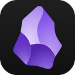
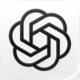
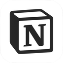

我在用的工具
按设备整理，共 41 个工具。点击卡片打开对应入口。
电脑端 20 个
Claude Code系统构建搭框架、做规划，难啃的活交给它。重度用

WorkBuddy派活多轮对话，把活一步步推进。重度用

Obsidian本地知识库素材、卡片、记录先落本地。重度用

八爪鱼 RPA采集发布要抓的页面，要跑的固定流程用它。重度用
闪电说语音输入边操作电脑边口述，不用停下来打字。重度用
Codex写代码脚本、页面、自动化，基本都是它写的。每天用
DeepSeek Harness代码辅助任务给它执行，人定方向，多 AI 交叉验收。每天用
everything文件秒搜忘了文件放哪，输入几个字就出来。每天用
Chrome 浏览器浏览器扩展自行开发扩展，示例：生意参谋数据采集每天用
UU远程远程控制电脑人在外面也能连回工作台接着干活。每天用
iTab 新标签页浏览器起始页网址、待办、常用站，一屏管完。经常用

Notion个人知识库长期资料和清单，手机电脑同步。经常用
Grok BotAI个人助理查实时信息，让 AI 当私人助理。经常用
即梦AI 视频画面一条视频的镜头和素材靠它出。经常用
剪映视频剪辑后期需要人工精修的时候用到。经常用
Ego (lite) 浏览器Agent浏览器AI 直接操控网页，复用登录态采集、填表。经常用
百度网盘素材备份大文件和原始素材放这，同步空间备份。经常用
Eagle素材管理乱七八糟素材先扔进去，有空再整理。经常用
ComfyUI节点式生图工作流节点搭好，批量出图、修图、出视频。经常用
融媒宝多平台发布一条内容，多平台同步发，账号统一管。经常用
手机端 14 个

滴答清单待办今天待办全在这；有 API，可接 AI 读写。重度用

ChatGPT随手问答手机上用文字或语音问答和整理想法。

豆包语音输入法语音输入能说话就不打字，随口一说，直接变文字。重度用

Chrome 浏览器手机上查资料查东西、看资讯，基本都靠它。重度用

Grok Bot派活与跟进手机上给 Bot 交办事项、查看结果。经常用
YouTube学东西教程、案例、同行作品。每天用

Codex手机上查进度看 AI 跑到哪了、批一下、调个方向经常用
X看海外一手消息行业动态、AI 圈第一手。经常用
挖财记账随手记支出，月底看账，导出账单扔给 AI。经常用
GitHub看开源逛项目、看源码、传代码。偶尔用
无边际随手画想法随手画，理思路，贴素材也方便。偶尔用

Notion手机上看资料长期资料、清单随时翻、日记。偶尔用
快捷指令一键自动化把重复动作做成按钮，打造自己贾维斯。偶尔用
手表端 2 个

家居端 6 个
扫地机器人地面清洁每天自己跑一圈，地面就不用我管了。重度用
洗碗机洗碗家庭矛盾调节器，吃完饭谁也不用洗碗。重度用
智能门锁门锁忘带钥匙这事儿，从根上没了。重度用
按摩椅按摩做电商久坐，全身容易出毛病，每天按按。重度用
洗衣机洗衣衣服扔进去，该干嘛干嘛。经常用
烘干机烘衣梅雨天不用看天洗衣服，阳台也不用挂满。经常用